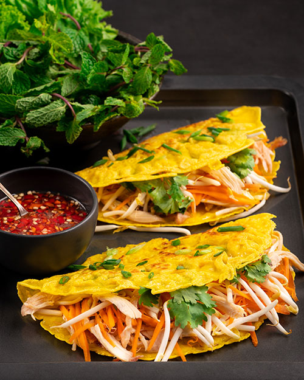
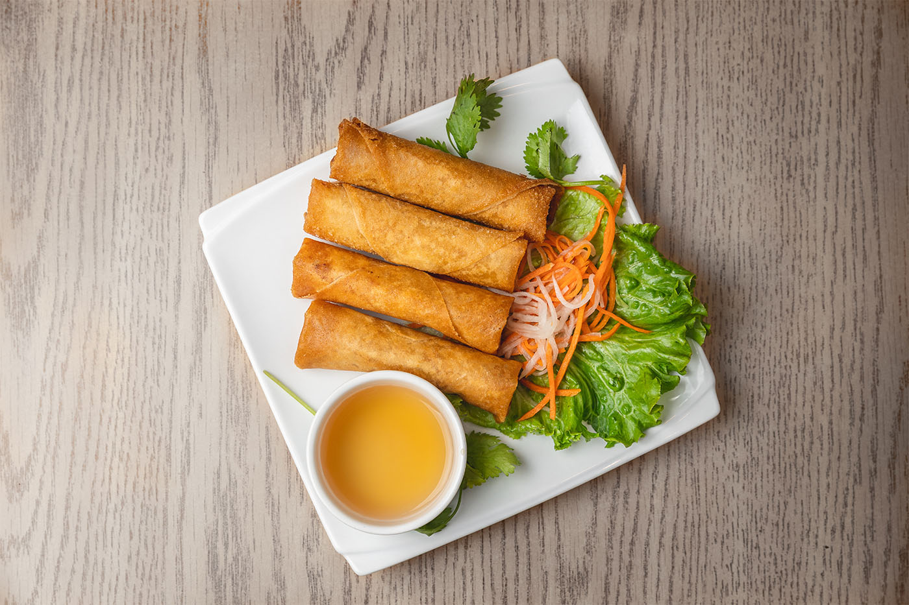
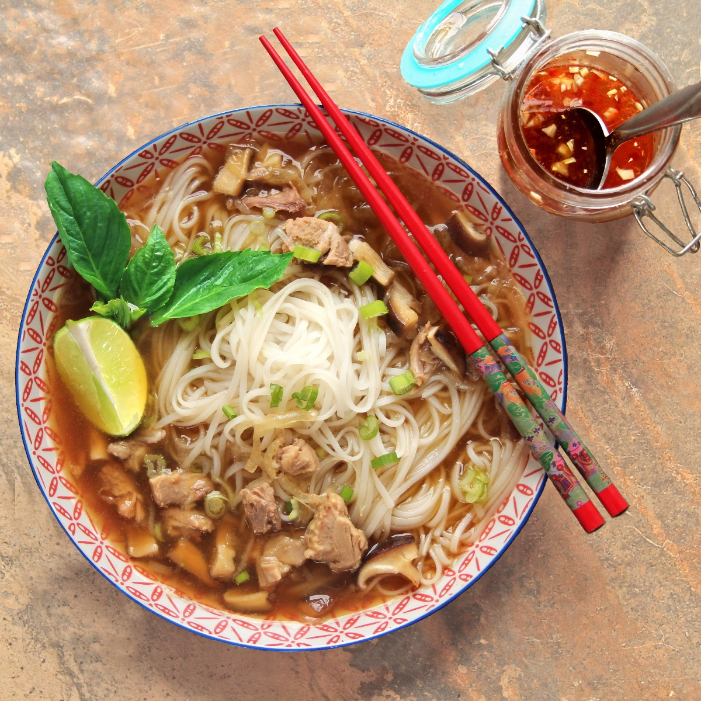
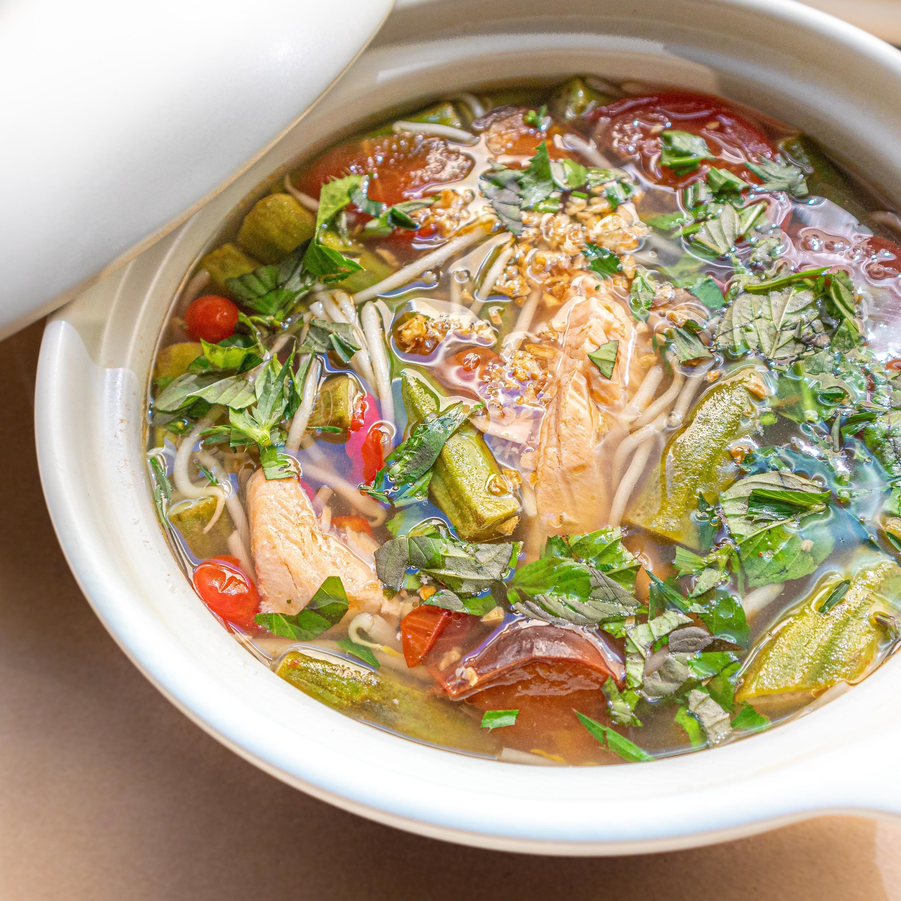

Bánh xèo
Cha gio
Phở
Gỏi đu đủ
Canh chua
Este pastel de gambas frito es característico del sur de Vietnam, en las regiones del centro suele ser algo más pequeño y está cocinado de diferente manera. Se parece a un crepe de harina de arroz y leche de coco. En su interior suele incluir trozos de cerdo, gambas y brotes de judías. Viene acompañado de una salsa de pescado rebajado con agua y limón.
Son los típicos rollitos de primavera vietnamitas. Aunque tienen varias modalidades, estos son fritos, por lo que son muy crujientes. Su interior está compuesto de carne picada, setas y vegetales. La carne generalmente es de cerdo, aunque también los hay de tofu, cangrejo o gambas. Viene acompañado de una salsa compuesta por pescado, zumo de limón o vinagre, azúcar y un poco de chili.
Es el plato estrella de Vietnam. Una sopa de noodles de arroz que generalmente va a acompañada de finas tiras de ternera. También puede ser de pechugas o muslos de pollo, albóndigas, hígado, etc. El plato suele venir acompañado de cebollas, hojas de coriandro, menta, albahaca, lima, brotes de soja y pimienta.
Es la típica ensalada vietnamita. Se compone de noodles de arroz fríos, brotes de soja, lonchas de carne seca, papaya, vegetales, cacahuete picado y gambas. Este plato suele venir acompañado de dos tipos de salsa: de soja o de chili, dependiendo de si la queremos más o menos picante.
Es una sopa característica del sur de Vietnam, más concretamente de la región del río Mekong. Esta se compone del pescado del mismo río, tomate, piña, brotes de judías y tamarindo. También lleva algunas hierbas como cilandro, albahaca, ajo y cebolleta. Esta sopa tiene un sabor un poco agrio, por el tamarindo, y cuenta con diferentes variedades dependiendo del pescado que se utilice o si es de pollo.



.jpeg)
